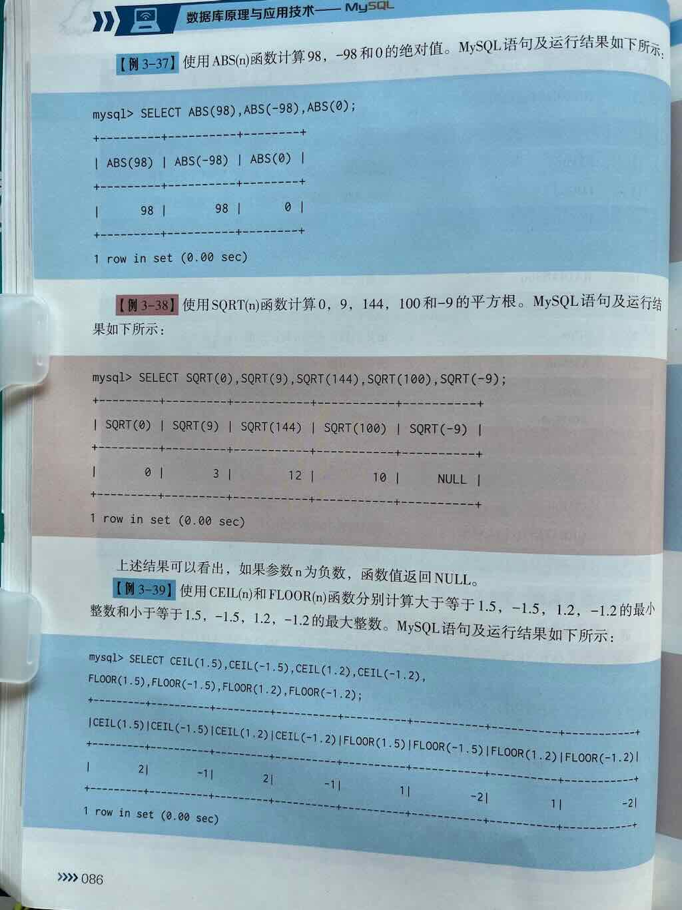
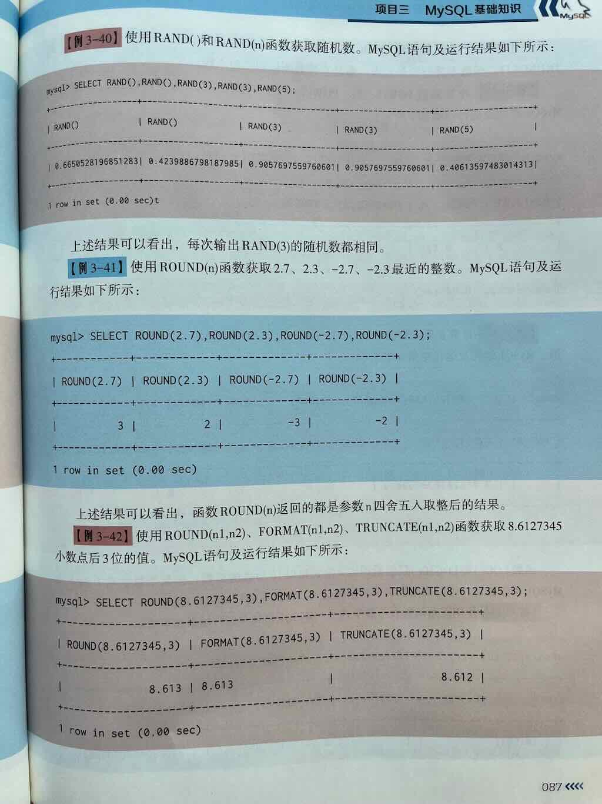
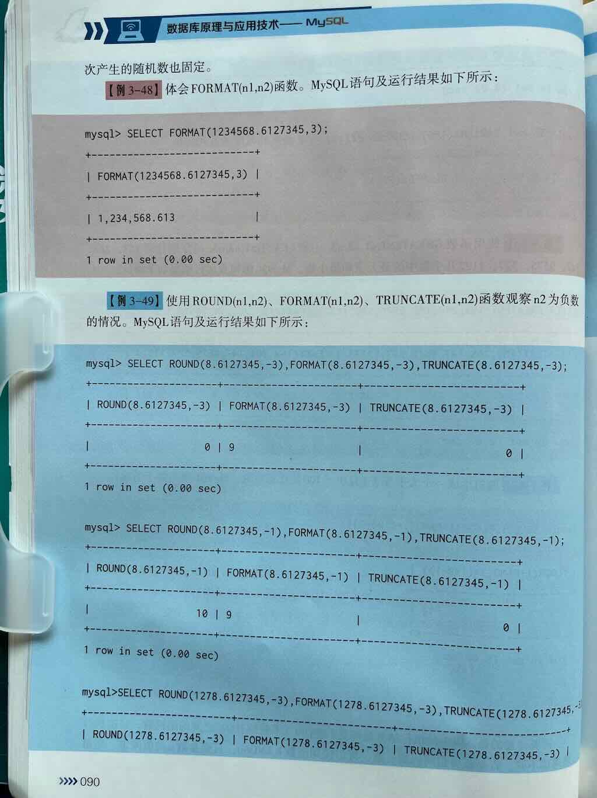
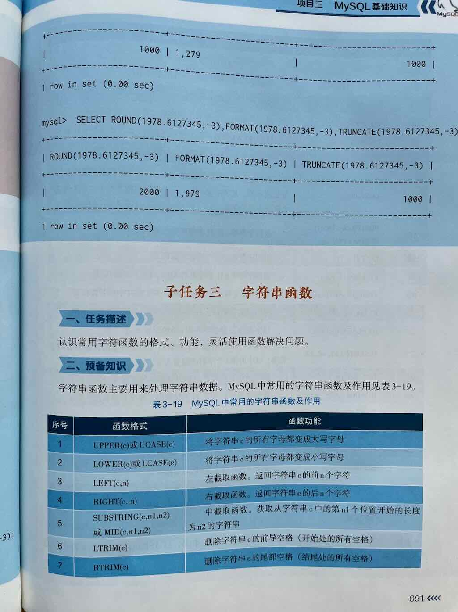

MySQL 中常见数学函数的用法详解¶
在 MySQL 中，数学函数（Mathematical Functions） 是用于对数值进行数学计算与处理的内置函数，它们在数据计算、统计分析、业务逻辑处理等场景中非常常用。
掌握这些函数可以让你在 SQL 查询中轻松实现：
- 基本运算（绝对值、取整、四舍五入等）
- 数学计算（幂、平方根、对数等）
- 随机数生成
- 数值比较与处理








一、MySQL 常见数学函数分类与详解¶
下面为你分类介绍 MySQL 中最常用的数学函数，包括语法、作用、示例及结果说明。
🔢 一、基本数学运算函数¶
1. ABS(x) —— 求绝对值¶
作用： 返回数值 x 的绝对值（非负数）
2. CEIL(x) 或 CEILING(x) —— 向上取整¶
作用： 返回大于或等于 x 的最小整数（向上取整）
3. FLOOR(x) —— 向下取整¶
作用： 返回小于或等于 x 的最大整数（向下取整）
4. ROUND(x) / ROUND(x, d) —— 四舍五入¶
作用： 对数值 x 进行四舍五入
- ROUND(x)：四舍五入到整数
- ROUND(x, d)：四舍五入到小数点后 d 位
SELECT ROUND(3.14159); -- 结果：3
SELECT ROUND(3.14159, 2); -- 结果：3.14
SELECT ROUND(3.678, 1); -- 结果：3.7
5. TRUNCATE(x, d) 或 TRUNC(x, d) —— 截断小数位（不四舍五入）¶
作用： 保留 x 的 d 位小数，直接截断，不四舍五入
✅ 与 ROUND 不同，TRUNCATE 不会进行四舍五入
🧮 二、数学计算函数¶
6. POW(x, y) 或 POWER(x, y) —— 求 x 的 y 次幂¶
7. SQRT(x) —— 求平方根¶
⚠️ 注意：x 必须为非负数，否则返回 NULL
8. MOD(x, y) 或 x % y —— 求余数（取模）¶
✅ 常用于判断奇偶性：
x % 2 = 0表示偶数
9. RAND() —— 生成 0 到 1 之间的随机浮点数¶
应用场景：
- 随机排序：ORDER BY RAND()
- 抽奖、随机推荐等
10. LEAST(value1, value2, ...) —— 返回一组值中的最小值¶
11. GREATEST(value1, value2, ...) —— 返回一组值中的最大值¶
🔢 三、数学常量（部分版本支持）¶
⚠️ 注意：部分数学常量如 PI() 是支持的，但像 E（自然常数）在 MySQL 中没有直接函数，但可以手动定义或计算
12. PI() —— 返回圆周率 π 的近似值¶
四、数学函数使用场景举例¶
✅ 示例 1：商品价格计算（四舍五入、取整）¶
假设有商品价格 price = 19.888，需要：
- 四舍五入到两位小数
- 向上取整到应付金额
- 向下取整为优惠价
SELECT
price,
ROUND(price, 2) AS rounded_price,
CEIL(price) AS ceil_price,
FLOOR(price) AS floor_price
FROM products
WHERE id = 1;
✅ 示例 2：计算平方与开方（几何或物理相关业务）¶
✅ 示例 3：计算余数（如判断奇偶）¶
SELECT
user_id,
user_id % 2 AS remainder,
CASE WHEN user_id % 2 = 0 THEN '偶数' ELSE '奇数' END AS parity
FROM users;
✅ 示例 4：随机推荐（如抽奖、随机排序）¶
✅ 示例 5：取最大值和最小值¶
✅ 常用数学函数速查表¶
| 函数 | 说明 | 示例 | 结果 |
|---|---|---|---|
ABS(x) |
绝对值 | ABS(-10) |
10 |
CEIL(x) / CEILING(x) |
向上取整 | CEIL(3.1) |
4 |
FLOOR(x) |
向下取整 | FLOOR(3.9) |
3 |
ROUND(x, d) |
四舍五入到 d 位小数 | ROUND(3.14159, 2) |
3.14 |
TRUNCATE(x, d) |
截断到 d 位小数（不四舍五入） | TRUNCATE(3.678, 2) |
3.67 |
POW(x,y) / POWER(x,y) |
x 的 y 次幂 | POW(2,3) |
8 |
SQRT(x) |
平方根 | SQRT(16) |
4 |
MOD(x,y) 或 x % y |
取余数 | MOD(10,3) |
1 |
RAND() |
0~1 随机浮点数 | RAND() |
如 0.123456 |
LEAST(a,b,...) |
返回最小值 | LEAST(5,3,8) |
3 |
GREATEST(a,b,...) |
返回最大值 | GREATEST(5,3,8) |
8 |
PI() |
圆周率 π | PI() |
3.141593 |
📌 总结¶
| 类别 | 常用函数 | 用途 |
|---|---|---|
| 基本运算 | ABS(), CEIL(), FLOOR(), ROUND(), TRUNCATE() |
取绝对值、取整、四舍五入等 |
| 数学计算 | POW(), SQRT(), MOD() |
幂运算、开方、取余 |
| 随机数 | RAND() |
生成随机数，用于随机排序、抽奖等 |
| 极值函数 | LEAST(), GREATEST() |
求一组值中的最小或最大值 |
| 常量 | PI() |
返回圆周率 π |
✅ 下一步建议¶
你可以尝试以下练习来巩固数学函数的使用：
- ✅ 对商品价格进行四舍五入到两位小数
- ✅ 使用
CEIL或FLOOR模拟支付金额向上取整 - ✅ 用
MOD()判断用户 ID 是否为偶数/奇数 - ✅ 用
RAND()实现随机排序或抽取 - ✅ 使用
POW()和SQRT()处理几何相关计算
如你希望获取这些函数的：
- ✅ 实际建表 + 数据 + 查询示例
- ✅ 与聚合函数（如 SUM、AVG）结合使用
- ✅ 在存储过程或触发器中的应用
- 完整的 SQL 实战案例。
9月29日 数学函数¶
考试大纲中的数学函数包括6个：ABS()、FLOOR()、RAND()、TRUNCATE()、SQRT() 、ROUND()、CEIL()、MOD() 、POW() 、FORMAT()
函数总结¶
| 函数 | 用途 | 示例 |
|---|---|---|
ABS(x) |
绝对值 | ABS(-5) = 5 |
RAND() |
随机小数 [0,1) | RAND() |
CEIL(x) |
向上取整 | CEIL(4.2) = 5 |
FLOOR(x) |
向下取整 | FLOOR(4.9) = 4 |
ROUND(x, d) |
四舍五入到d位小数 | ROUND(3.14159, 2) = 3.14 |
TRUNCATE(x, d) |
截断到d位小数 | TRUNCATE(3.14159, 2) = 3.14 |
POW(x, y) |
x的y次方 | POW(2, 5) = 32 |
SQRT(x) |
平方根 | SQRT(81) = 9 |
MOD(x, y) |
求余数 | MOD(17, 5) = 2 |
PI() |
圆周率 | PI() = 3.141593 |
ABS()¶
用途：取绝对值
语法：
示例
MOD()¶
用途：取余数
语法
示例
POW()¶
用途：计算 x 的 y 次幂
语法
示例
SQRT()¶
用途：求平方根
语法
注意：x 必须为非负数
示例
CEIL()¶
用途：向上取整
示例
FLOOR()¶
用途：向下取整
语法
示例
ROUND()¶
用途：四舍五入到指定小数位
语法
示例
ROUND() 函数使用要点
- 基本语法：
ROUND(number, decimals) number：要四舍五入的数字-
decimals：要保留的小数位数 -
小数位数参数：
0：四舍五入到整数1：保留一位小数2：保留两位小数-
以此类推...
-
与 RAND() 结合的优势：
- 可以精确控制随机数的精度
- 适合需要特定小数位数的场景（如金额、评分、坐标等）
-
比 FLOOR/TRUNCATE 更符合日常四舍五入的习惯
-
注意事项：
- ROUND() 是四舍五入，不是截断
- 对于边界值要特别注意（如 0.5 会向上舍入）
- 负数也是按四舍五入规则处理
TRUNCATE()¶
用途：直接截断小数位。（与 ROUND 不同，不会四舍五入）
语法
示例
FORMAT()¶
用途：数字格式化（千分位）
语法
示例
RAND()¶
用途: 生成 [0~1)之间的随机浮点数。
语法
示例：
示例:生成一个0 ~ 1之间(不含1）的随机小数
运行结果
+--------------------+
| rand() |
+--------------------+
| 0.5100285648461698 |
+--------------------+
1 row in set (0.001 sec)
练习1:基础函数¶
- 计算-25的绝对值
- 生成一个 0 到 1 之间的随机小数
- 将数字 4.2 向上取整
- 将数字 4.9 向下取整
- 将数字 3.14159 保留两位小数并四舍五入
- 将数字 3.14159 截断为两位小数
- 计算 2 的 5 次方
- 计算 81 的平方根
- 求 17 除以 5 的余数
- 查询圆周率 PI 的值 : select PI()
- 随机生成一个 1 到 100 之间的整数
- 将 -8.7 四舍五入为整数
练习2：随机数¶
-
基础随机数生成
-
指定范围的随机整数
-
随机布尔值
-
随机小数范围
-
随机抽奖号码
-
保留指定位数的随机小数
-
使用种子的随机数
-
随机排序查询结果
-
随机百分比
-
随机日期范围
练习3：随机数round¶
-
基础随机数四舍五入
-
指定范围的随机整数
-
保留指定位数的随机小数
-
范围随机小数四舍五入
-
随机百分比
-
随机金额
-
随机评分
-
随机温度
-
随机坐标
-
随机权重
练习1答案¶
- 计算-25的绝对值
- 生成一个 0 到 1 之间的随机小数
- 将数字 4.2 向上取整
- 将数字 4.9 向下取整
- 将数字 3.14159 保留两位小数并四舍五入
- 将数字 3.14159 截断为两位小数
- 计算 2 的 5 次方
- 计算 81 的平方根
- 求 17 除以 5 的余数
- 查询圆周率 PI 的值
- 随机生成一个 1 到 100 之间的整数
- 将 -8.7 四舍五入为整数
练习2答案¶
-
基础随机数生成
-
指定范围的随机整数
-
随机布尔值
-
随机小数范围
-
随机抽奖号码
-
保留指定位数的随机小数
-
使用种子的随机数
-
随机排序查询结果
-
随机百分比
-
随机日期范围
练习3答案¶
-
基础随机数四舍五入
-
指定范围的随机整数
-
保留指定位数的随机小数
-
范围随机小数四舍五入
-
随机百分比
-
随机金额
-
随机评分
-
随机温度
-
随机坐标
-
随机权重